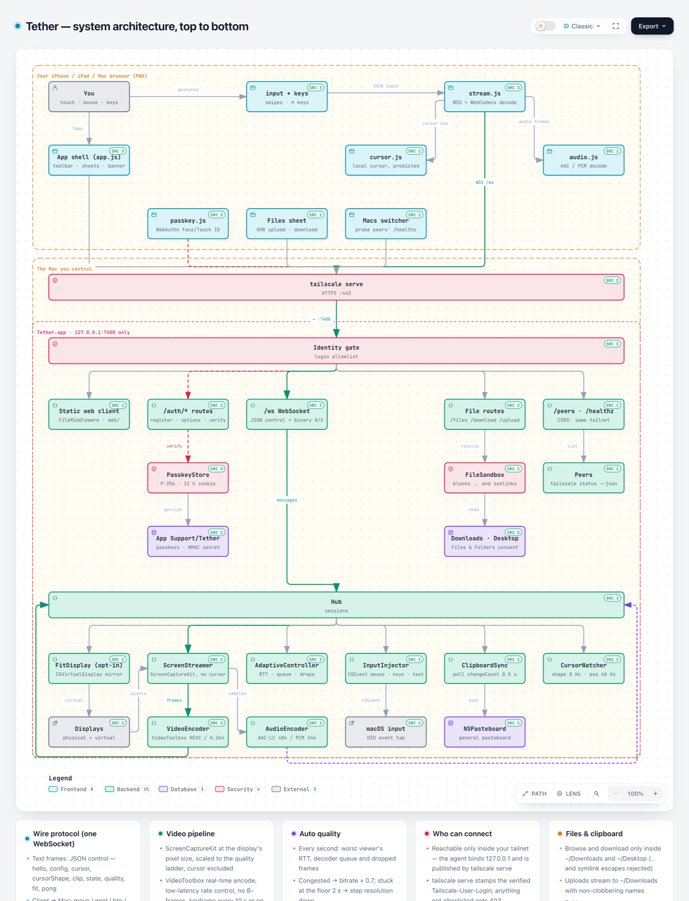
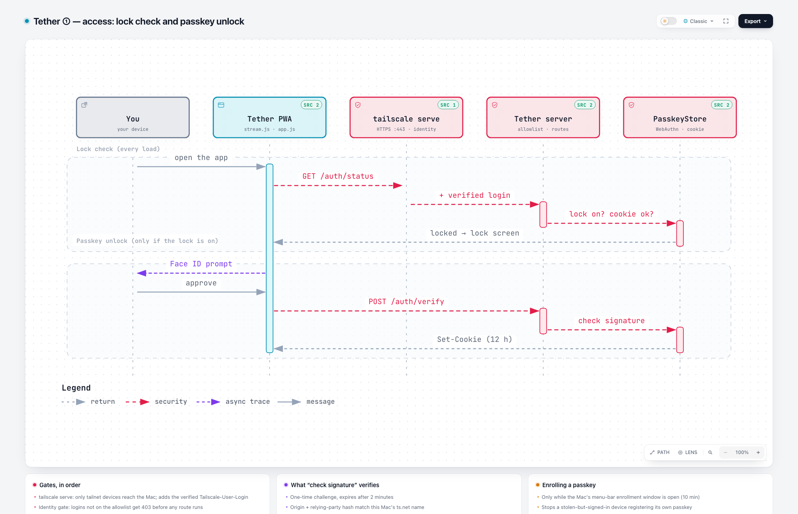
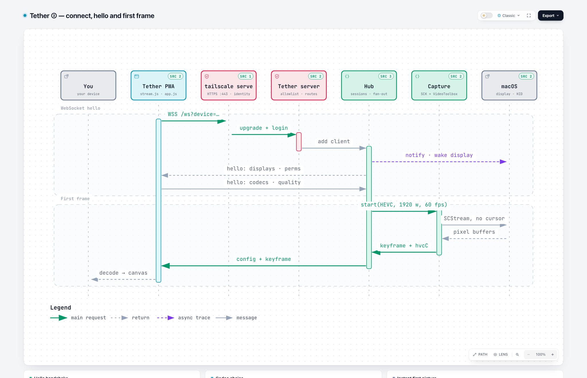
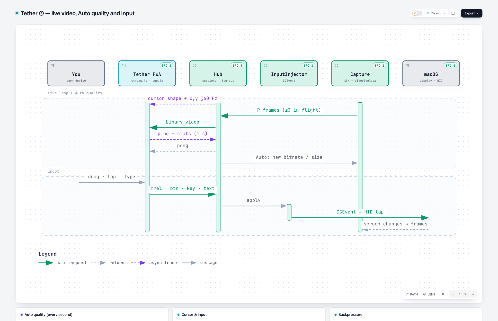
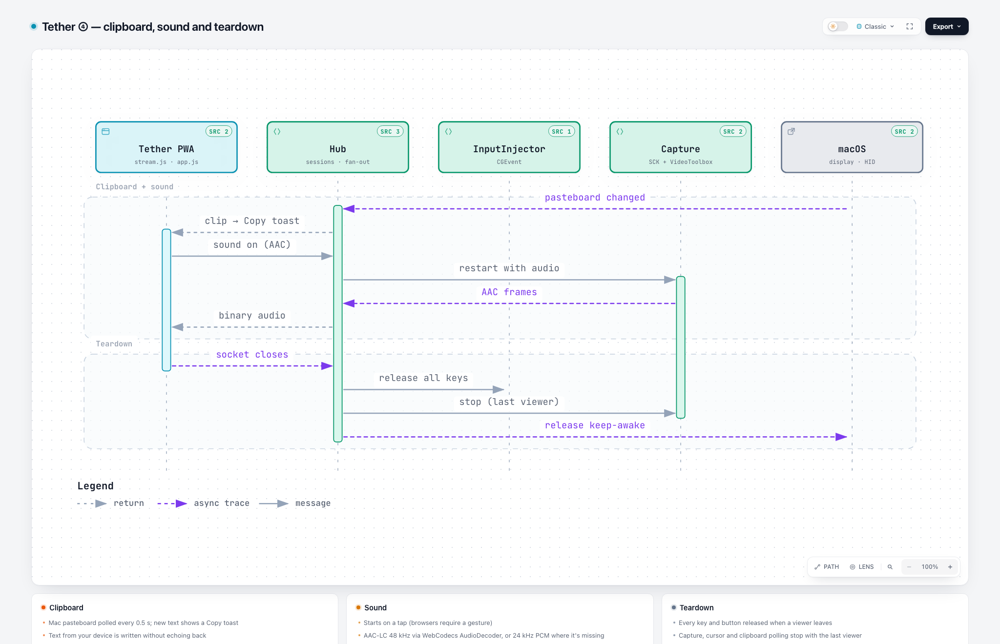
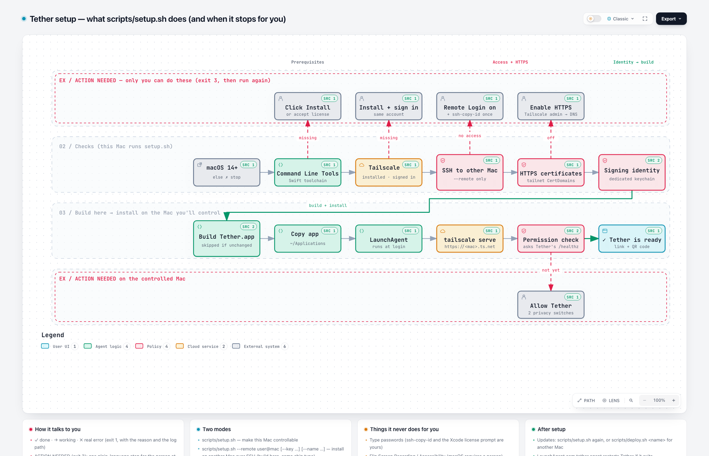

Tether, mapped
Interactive diagrams of Tether, a small open-source way to control your Mac from your iPhone, iPad or any computer over Tailscale. Click a box to see the code behind it, trace a path, or switch guided views. Made with Archify.

System architecture
Every component, from the browser through Tailscale and the identity gate to capture, encoding, input and macOS.

① Access
Lock check on every load and the optional Face ID / Touch ID passkey unlock.

② Connect
WebSocket hello, HEVC/H.264 negotiation and the instant first frame.

③ Live
Video loop, local cursor, Auto quality, and how a tap becomes a macOS event.

④ Extras
Clipboard sync, sound, and teardown when you disconnect.

Setup
What scripts/setup.sh checks, builds and installs, and where it waits for you.